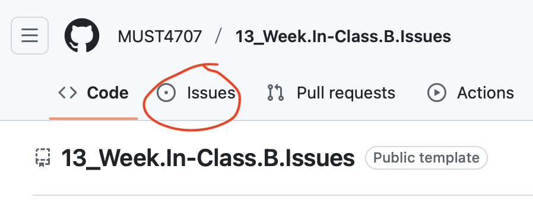

What Is the Issues Tab?
The Issues tab is where you can track tasks, bugs, feature requests, questions, or any other actionable item related to the project.
How to Use It
1. Navigate to the Issues Tab
- Go to the repository on GitHub.
- Click the Issues tab near the top of the page.

⠀2. Create a New Issue
- Click the green "New issue" button.
- Add a title that clearly describes the problem or idea.
- Use the description box to:
- Explain the context.
- List steps to reproduce (for bugs).
- Add screenshots, code snippets, or references if helpful.
- (Optional) Use Markdown for formatting (e.g., bold, - lists, # headings).
⠀3. Apply Labels (if you have permission)
- Labels help organize issues (e.g., bug, enhancement, question).
- Maintainers can create and assign labels for better tracking.
⠀4. Assign People or Projects (if needed)
- You can assign the issue to someone responsible.
- Optionally, link the issue to a GitHub Project board or Milestone for progress tracking.
⠀5. Comment and Collaborate
- Anyone with access can comment on the issue to ask questions, propose solutions, or provide updates.
- Mention people using @username.
⠀6. Close the Issue
- Once resolved, click "Close issue" or comment and close it.
- Good practice: summarize how it was resolved in the closing comment.